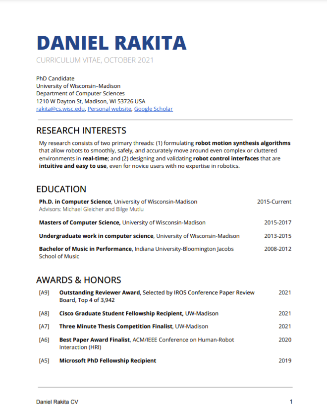

About Me
My research primarily involves formulating planning, learning, and optimization algorithms that allow robot manipulation platforms to effectively complete tasks.
The goal of my work is to enable people to intuitively control or work alongside robot manipulation platforms to perform critical tasks deemed unsuitable, undesirable, understaffed, or unsafe for people, such as full-time homecare, home assistance, telenursing, robot surgery, disaster relief, large-scale manufacturing, nuclear materials handling, and space robotics. I use interdisciplinary techniques across robotics and computer science, including motion planning, motion optimization, shared autonomy, human-robot interaction, and machine learning to formulate and validate generalizable, end-to-end solutions within these problem spaces.
News
[November 2023]: I am recruiting graduate students for Fall 2024. If you have questions, reach out!
[April 2023]: News article on our paper An Analysis of Unified Manipulation with Robot Arms and Dexterous Hands via Optimization-based Motion Synthesis that will be featured at ICRA 2023 in London.
[March 2023]: Our paper, Lively: Enabling Multimodal, Lifelike, and Extensible Real-time Robot Motion, won a Best Paper Award at HRI 2023! Check out documentation and code for our proposed method here.
CV
Click to download.
 Publications
Journal Articles
[J6] Chamzas, C., Quintero, C., Kingston, Z., Orthey, A., Rakita, D., Gleicher, M., Toussaint, M., Kavraki, L. 2022. MOTIONBENCHMAKER: A Tool to Generate and Benchmark Motion Planning Datasets. Robotics and Automation Letters (RA-L). In Proceedings International Conference on Robotics and Automation (ICRA).
[J5] Rakita, D., Mutlu, B., Gleicher, M. 2021. Single Query Path Planning using Sample Efficient Probability Informed Trees. Robotics and Automation Letters (RA-L). In Proceedings International Conference on Robotics and Automation (ICRA).
[J4] Rakita, D., Mutlu, B., Gleicher, M. 2020. An Analysis of RelaxedIK: An Optimization-Based Framework for Generating Accurate and Feasible Robot Arm Motions. Autonomous Robotics (AURO).
[J3] Rakita, D., Mutlu, B., Gleicher, M., and Hiatt, L. 2019. Shared-Control-Based Bimanual Robot Manipulation. Science Robotics.
[J2] Bodden, C., Rakita, D., Mutlu, B., and Gleicher, M. 2018. A Flexible Optimization-Based Method for Synthesizing Intent-Expressive Robot Arm Motion. The International Journal of Robotics Research (IJRR). SAGE.
[J1] Pejsa, T., Rakita, D., Mutlu, B., & Gleicher, M. 2016. Authoring directed gaze for full-body motion capture. ACM Transactions on Graphics, 35(6), 1–11. Proceedings SIGGRAPH ASIA 2016, December 2016.
Conference Papers
[C19] Patel, V., Rakita, D., and Dollar, A. 2023. An Analysis of Unified Manipulation with Robot Arms and Dexterous Hands via Optimization-based Motion Synthesis. International Conference on Robotics and Automation (ICRA).
[C18] Wang, Y., Praveena, P., Rakita, D., and Gleicher, M. 2023. RangedIK: An Optimization-Based Robot Motion Generation Method for Ranged-Goal Tasks. International Conference on Robotics and Automation (ICRA).
[C17] Schoen, A., Sullivan, D., Zhang, Z., Rakita, D., and Mutlu, M. 2023. Lively: Enabling Multimodal, Lifelike, and Extensible Real-time Robot Motion. International Conference on Human-Robot Interaction (HRI). ACM/IEEE.
[C16] Rakita, D., Mutlu, B., and Gleicher, M. 2022. Proxima: An Approach for Time or Accuracy Budgeted Collision Proximity Queries. Robotics: Science and Systems (RSS) .
[C15] Rakita, D., Shi, H., Mutlu, B., and Gleicher, M. 2021. CollisionIK: A Per-Instant Pose Optimization Method for Generating Robot Motions with Environment Collision Avoidance. International Conference on Robotics and Automation (ICRA).
[C14] Rakita, D., Mutlu, B., and Gleicher, M. 2021. Strobe: An Acceleration Meta-algorithm for Optimizing Robot Paths using Concurrent Interleaved Sub-Epoch Pods. International Conference on Robotics and Automation (ICRA).
[C13] Rakita, D., Mutlu, B., and Gleicher, M. 2020. Effects of Onset Latency and Robot Speed Delays on Mimicry-Control Teleoperation. International Conference on Human-Robot Interaction (HRI). ACM/IEEE
[C12] Praveena, P., Rakita, D., Mutlu, B., and Gleicher, M. 2020. Supporting Perception of Weight through Motion-induced Sensory Conflicts in Robot Teleoperation. International Conference on Human-Robot Interaction (HRI). ACM/IEEE.
[C11] Rakita, D., Mutlu, B., and Gleicher, M. 2019. Remote Telemanipulation with Adapting Viewpoints in Visually Complex Environments. Robotics: Science and Systems (RSS).
[C10] Rakita, D., Mutlu, B., and Gleicher, M. 2019. Stampede: A Discrete-Optimization Method for Solving Pathwise-Inverse Kinematics. International Conference on Robotics and Automation (ICRA).
[C9] Praveena, P., Rakita, D., Mutlu, B., and Gleicher, M. 2019. User-Guided Offline Synthesis of Robot Arm Motion from 6- DoF Paths. International Conference on Robotics and Automation (ICRA).
[C8] Rakita, D., Mutlu, B., and Gleicher, M. 2018. RelaxedIK: Real-time Synthesis of Accurate and Feasible Robot Arm Motion. Robotics: Science and Systems (RSS).
[C7] Rakita, D., Mutlu, B., and Gleicher, M. 2018. An Autonomous Dynamic Camera Method for Effective Remote Teleoperation. International Conference on Human-Robot Interaction (HRI). ACM/IEEE.
[C6] Rakita, D., Mutlu, B., Gleicher, M., and Hiatt, L. 2018. Shared Dynamic Curves: A Shared-Control Telemanipulation Method for Motor Task Training. International Conference on Human-Robot Interaction (HRI). ACM/IEEE.
[C5] Rakita, D., Mutlu, B., and Gleicher, M. 2017. A Motion Retargeting Method for Effective Mimicry-based Teleoperation of Robot Arms. International Conference on Human-Robot Interaction (HRI). ACM/IEEE.
[C4] Liu, O., Rakita, D., Mutlu, B., and Gleicher, M. 2017. Understanding Human-Robot Interaction in Virtual Reality. RO-MAN 2017-The IEEE International Symposium on Robot and Human Interactive Communication. IEEE.
[C3] Subramani, G., Rakita, D., Wang H., Zinn, M., Gleicher, M. 2017. Recognizing Actions during Tactile Manipulations through Force Sensing. International Conference on Intelligent Robots and Systems (IROS). IEEE/RSJ.
[C2] Rakita, D., Mutlu, B., and Gleicher, M. 2016. Motion Synopsis for Robot Arm Trajectories. RO-MAN 2016-The 25th IEEE International Symposium on Robot and Human Interactive Communication. IEEE.
[C1] Bodden, C., Rakita, D., Mutlu, B., and Gleicher, M. 2016. Evaluating Intent-Expressive Robot Arm Motion. RO-MAN 2016-The 25th IEEE International Symposium on Robot and Human Interactive Communication. IEEE.
Short Papers
[S2] Rakita, D. 2017. Methods for Effective Mimicry-based Teleoperation of Robot Arms. International Conference on Human-Robot Interaction (HRI) Pioneers Workshop.
[S1] Rakita, D., Pejsa, T., Mutlu, B., and Gleicher, M. 2015. Inferring Gaze Shifts from Captured Body Motion. SIGGRAPH 2015 Poster Proceedings 77, 77:1.
Awards
[A12] Best Paper Award Winner, ACM/IEEE Conference on Human-Robot Interaction (HRI) (2023)
[A11] Outstanding Graduate-Student Research Award, UW-Madison (2022)
[A10] Outstanding Reviewer Award, Selected by IROS Conference Paper Review Board, Top 4 of 3,942 (2021)
[A9] Cisco Graduate Student Fellowship Recipient, UW-Madison (2021)
[A8] Three Minute Thesis Competition Finalist, UW-Madison (2021)
[A7] Best Paper Award Finalist, ACM/IEEE Conference on Human-Robot Interaction (2021)
[A6] Microsoft PhD Fellowship Recipient (2019)
[A5] Best Paper Award Winner, ACM/IEEE Conference on Human-Robot Interaction (HRI), Top 4 of 206 papers (2018)
[A4] NSF Graduate Research Fellowship Program Honorable Mention (2017)
[A3] HRI Pioneer, accepted to the selective workshop held at HRI 2017
[A2] Best Paper Award Nominee, IEEE Symposium on Robot and Human Interactive Communication (2017)
[A1] ACM SIGGRAPH Student Research Competition 1st Place